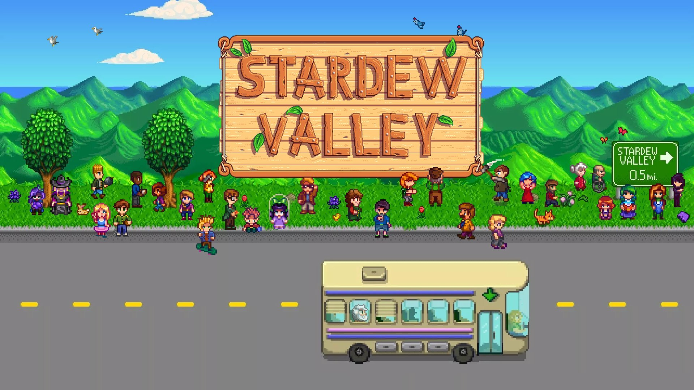

'Stardew Valley' makes US$1mil in three weeks on mobile
Stefanie Fogel

Stardew Valley first released on PC in 2016 and has reportedly sold over 3.5 million copies across all platforms since. - AFP Relaxnews.
LOS ANGELES: Critically-acclaimed indie farming simulator/role-playing game Stardew Valley is having a great first month on mobile. It’s grossed US$1mil (RM4.18mil) after only three weeks on iOS, according to market intelligence company Sensor Tower.
The US makes up the majority of players on mobile so far, Sensor Tower said. About 41% of copies sold come from there. Japan makes up about 12% of spending to date. Nearly 25% of mobile purchases have been made on iPads.
Stardew Valley first released on PC in 2016 and has reportedly sold over 3.5 million copies across all platforms since. The iOS port, developed by mobile game studio The Secret Police, launched on Oct 24. It’s the full version of the game and plays almost identically to its PC and console counterparts, creator Eric Barone assured fans in an announcement last month.
Today is the 2 year anniversary of Stardew Valley. I've got that strange sensation of both the shortest and longest 2 years of my life. Thanks for joining me on this journey everyone. With MP close, my next (secret) game in the works, and more... there's lots to look forward to
The biggest difference is the addition of touchscreen controls, along with a tweaked UI and menu system. Stardew Valley on iOS also includes all of the single-player content released in the recent 1.3 update, including the night market and new character events.
Stardew Valley publisher Chucklefish Games is now working with developer Pixpil on an adventure/RPG called Eastward. It’s inspired by 90s Japanese animation and video game classics like Mother and The Legend of Zelda. The publisher is also creating a new sim called Spellbound, which CEO Finn Brice once described as “‘Stardew Valley’ meets ‘Harry Potter.’” Neither game has a release date yet.
Meanwhile, Barone is working on a new “secret” project. He teased it on Twitter back in February. – Reuters.